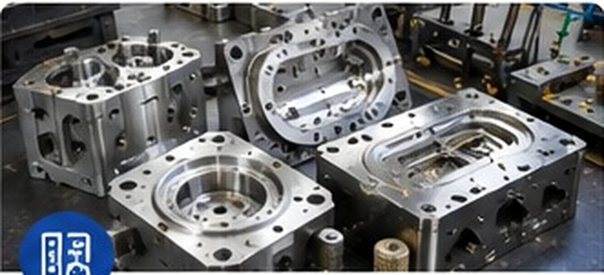

01 / Rubber
Rubber Moulds & Tools
Compression, transfer and injection moulding solutions for industrial rubber components, with tooling designed around repeatability, flash control and dimensional requirements.
- Compression moulds
- Transfer moulds
- Injection moulds
- O-ring moulds
- Rubber seal moulds
- Gasket moulds
- Bush moulds
- Diaphragm moulds
- Valve-seat moulds
- Custom rubber component moulds
Materials: EPDM, NBR, HNBR, FKM/Viton, Silicone, Neoprene and other elastomers.